Guilloche Capability 20260817 v2
Additive P1-P5 tuning and latent-image review of the izzi guilloche vocabulary: ten categories, four per-axis series each consolidated into one 1x3 variation grid (symmetry, density, scale, phase).
Izzi generation commit: 0b5f88e0fed029d58f5e3a4a9e3961844cd579de · 40 passes
-
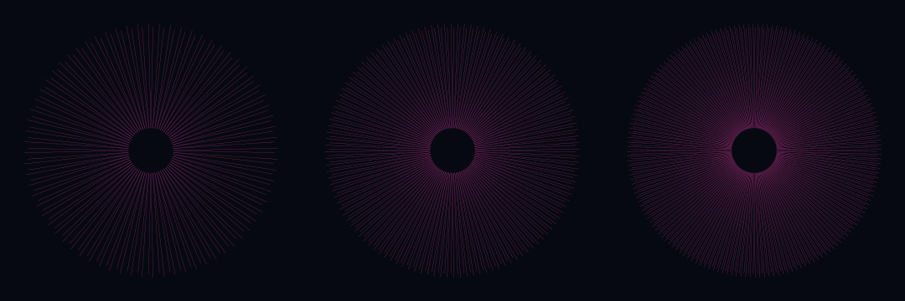
P1 sunburst — Symmetry variations
Reference-guided radial straight-ray sunburst. Symmetry varies while density stays fixed. Combined as a 1x3 grid of three variations.
-
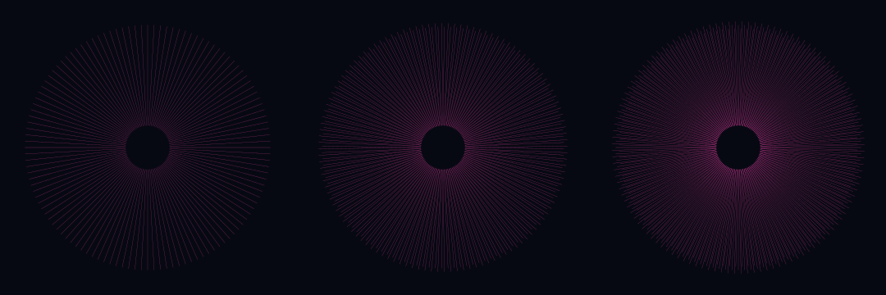
P1 sunburst — Density variations
Reference-guided radial straight-ray sunburst. Density varies while symmetry stays fixed. Combined as a 1x3 grid of three variations.
-
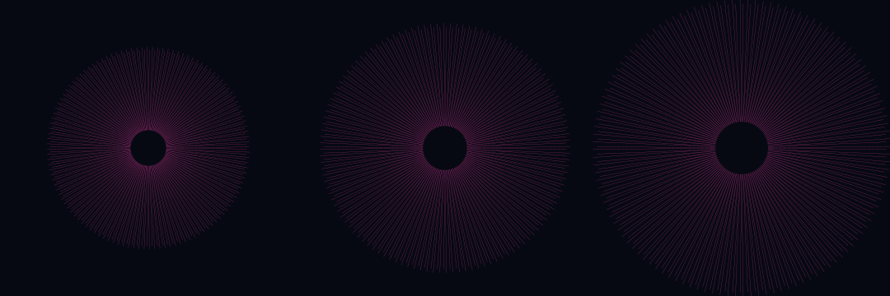
P1 sunburst — Scale variations
Reference-guided radial straight-ray sunburst. Scale varies while phase stays fixed. Combined as a 1x3 grid of three variations.
-
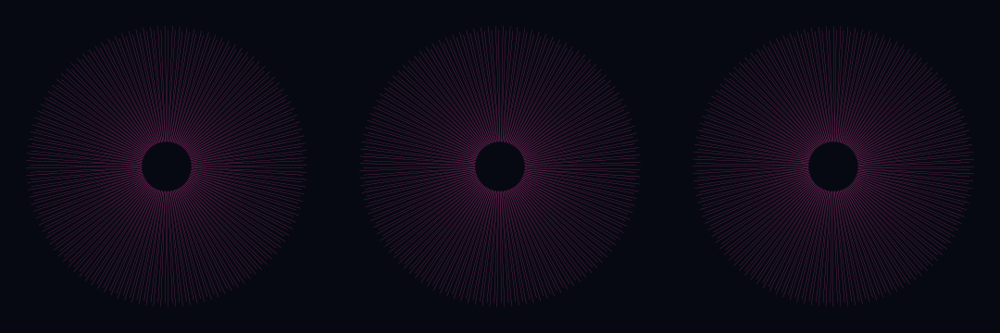
P1 sunburst — Phase variations
Reference-guided radial straight-ray sunburst. Phase varies while scale stays fixed. Combined as a 1x3 grid of three variations.
-
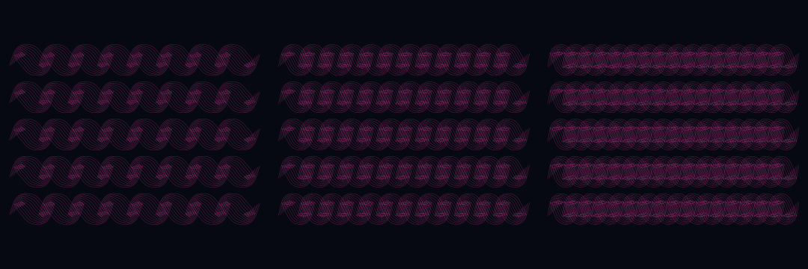
P1 harmonic band — Symmetry variations
Multi-harmonic engraved wave band with fixed span scaling. Symmetry varies while density stays fixed. Combined as a 1x3 grid of three variations.
-
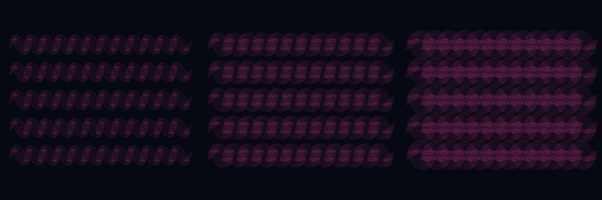
P1 harmonic band — Density variations
Multi-harmonic engraved wave band with fixed span scaling. Density varies while symmetry stays fixed. Combined as a 1x3 grid of three variations.
-
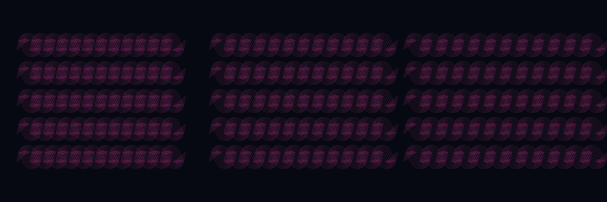
P1 harmonic band — Scale variations
Multi-harmonic engraved wave band with fixed span scaling. Scale varies while phase stays fixed. Combined as a 1x3 grid of three variations.
-
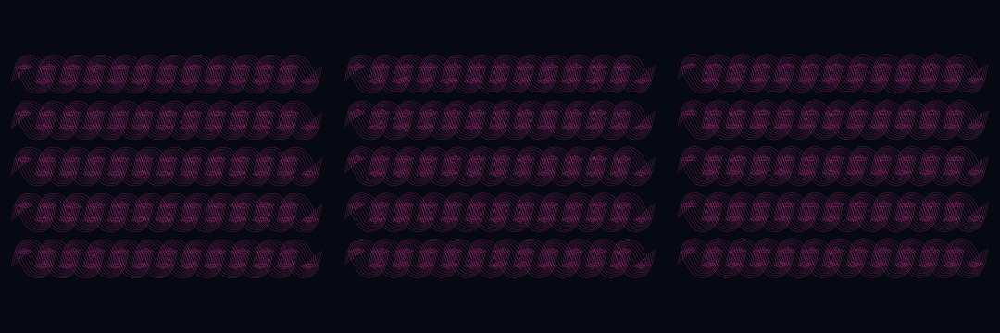
P1 harmonic band — Phase variations
Multi-harmonic engraved wave band with fixed span scaling. Phase varies while scale stays fixed. Combined as a 1x3 grid of three variations.
-
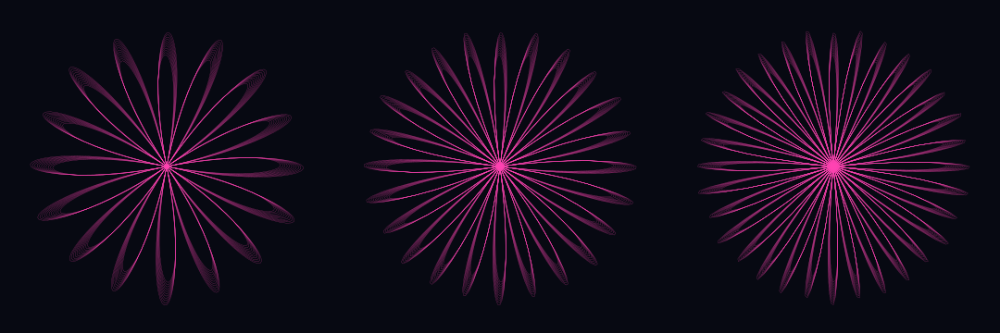
P1 rosette — Symmetry variations
Nested modulated rose with opt-in density ranges. Symmetry varies while density stays fixed. Combined as a 1x3 grid of three variations.
-
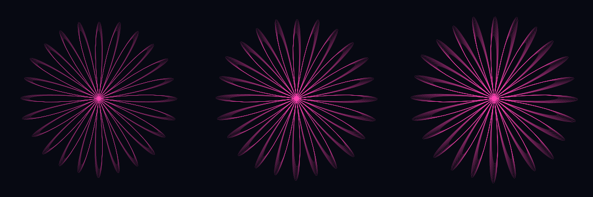
P1 rosette — Density variations
Nested modulated rose with opt-in density ranges. Density varies while symmetry stays fixed. Combined as a 1x3 grid of three variations.
-
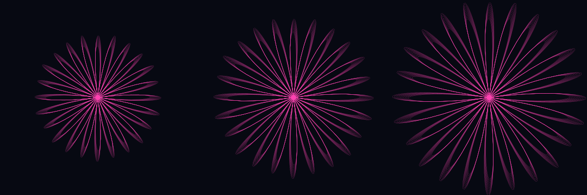
P1 rosette — Scale variations
Nested modulated rose with opt-in density ranges. Scale varies while phase stays fixed. Combined as a 1x3 grid of three variations.
-
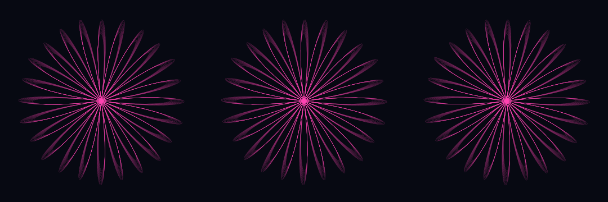
P1 rosette — Phase variations
Nested modulated rose with opt-in density ranges. Phase varies while scale stays fixed. Combined as a 1x3 grid of three variations.
-
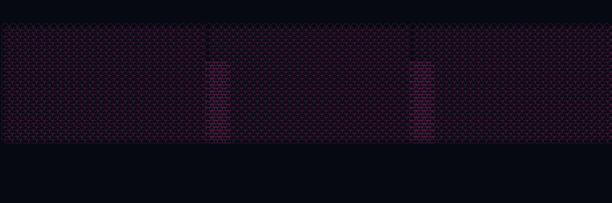
P2 fish scale — Symmetry variations
Overlapping scales with relief return seams. Symmetry varies while density stays fixed. Combined as a 1x3 grid of three variations.
-
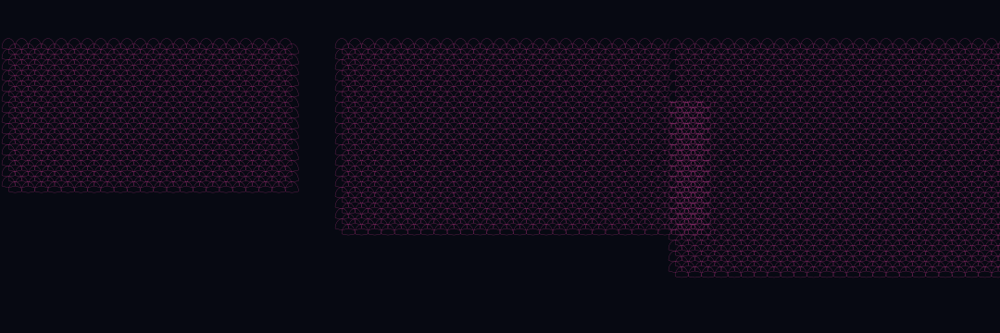
P2 fish scale — Density variations
Overlapping scales with relief return seams. Density varies while symmetry stays fixed. Combined as a 1x3 grid of three variations.
-
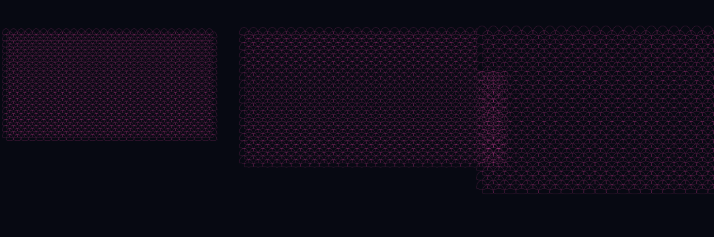
P2 fish scale — Scale variations
Overlapping scales with relief return seams. Scale varies while phase stays fixed. Combined as a 1x3 grid of three variations.
-
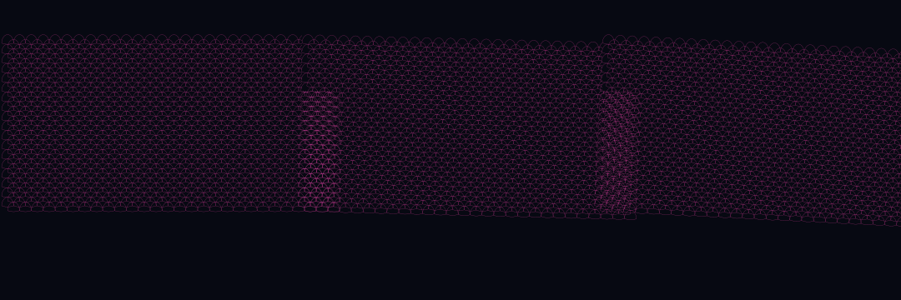
P2 fish scale — Phase variations
Overlapping scales with relief return seams. Phase varies while scale stays fixed. Combined as a 1x3 grid of three variations.
-
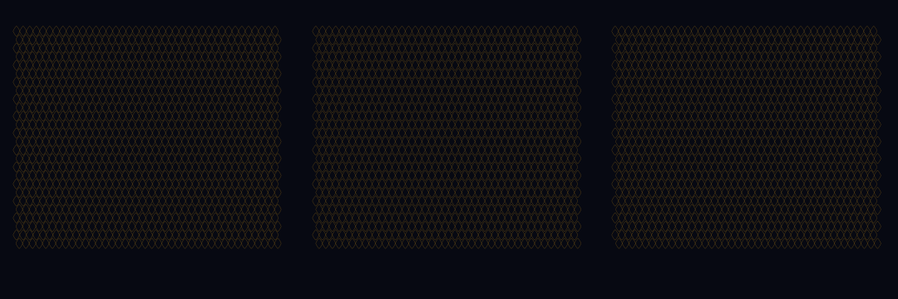
P2 barleycorn — Symmetry variations
Pointed relief grains with row overlap. Symmetry varies while density stays fixed. Combined as a 1x3 grid of three variations.
-
P2 barleycorn — Density variations
Pointed relief grains with row overlap. Density varies while symmetry stays fixed. Combined as a 1x3 grid of three variations.
-
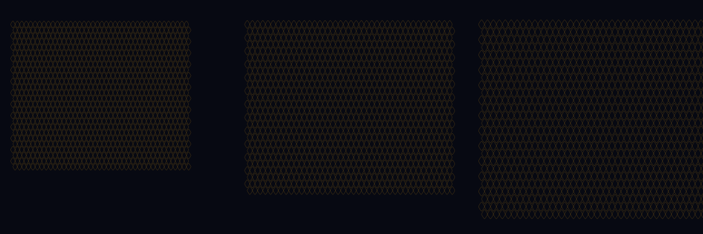
P2 barleycorn — Scale variations
Pointed relief grains with row overlap. Scale varies while phase stays fixed. Combined as a 1x3 grid of three variations.
-
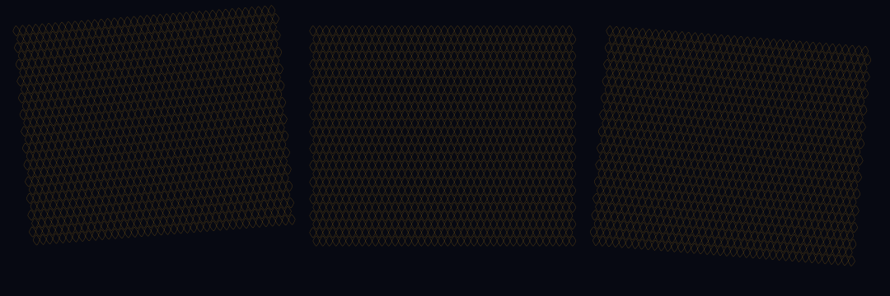
P2 barleycorn — Phase variations
Pointed relief grains with row overlap. Phase varies while scale stays fixed. Combined as a 1x3 grid of three variations.
-
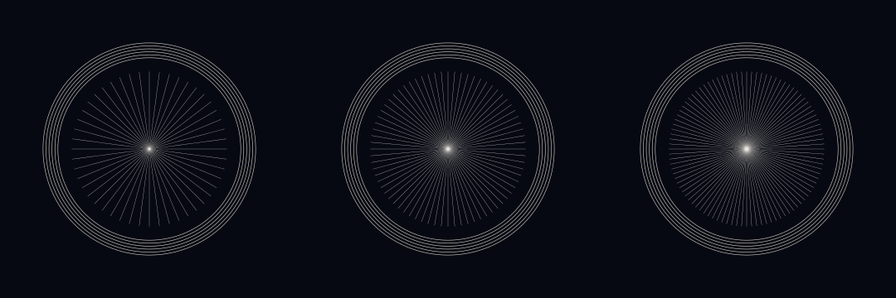
P3 medallion — Symmetry variations
Narrow multi-ring frame with separated inset. Symmetry varies while density stays fixed. Combined as a 1x3 grid of three variations.
-
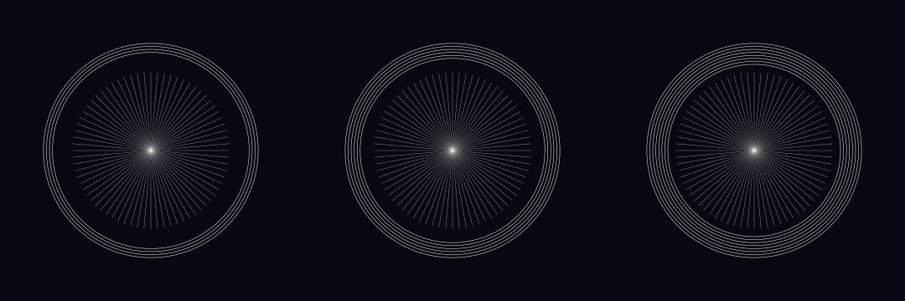
P3 medallion — Density variations
Narrow multi-ring frame with separated inset. Density varies while symmetry stays fixed. Combined as a 1x3 grid of three variations.
-
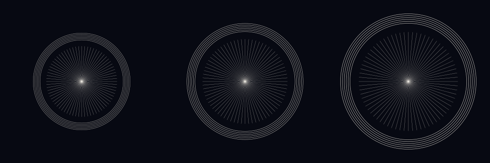
P3 medallion — Scale variations
Narrow multi-ring frame with separated inset. Scale varies while phase stays fixed. Combined as a 1x3 grid of three variations.
-
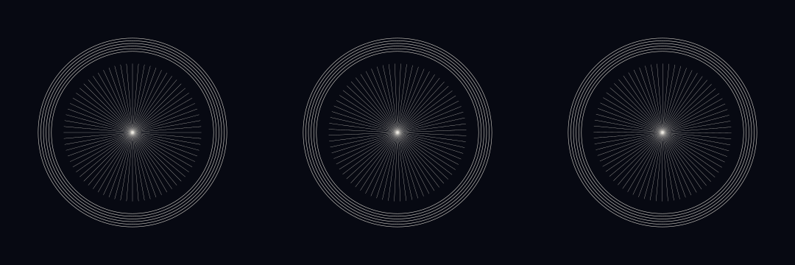
P3 medallion — Phase variations
Narrow multi-ring frame with separated inset. Phase varies while scale stays fixed. Combined as a 1x3 grid of three variations.
-
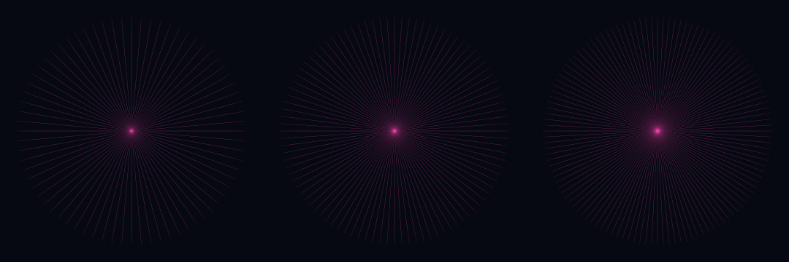
P3 vignette — Symmetry variations
Annular falloff frame with compact feather band. Symmetry varies while density stays fixed. Combined as a 1x3 grid of three variations.
-
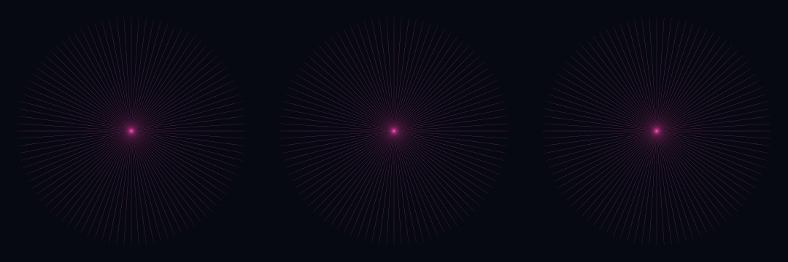
P3 vignette — Density variations
Annular falloff frame with compact feather band. Density varies while symmetry stays fixed. Combined as a 1x3 grid of three variations.
-
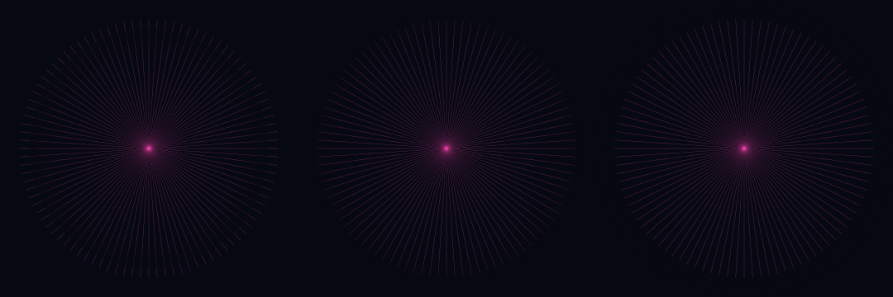
P3 vignette — Scale variations
Annular falloff frame with compact feather band. Scale varies while phase stays fixed. Combined as a 1x3 grid of three variations.
-
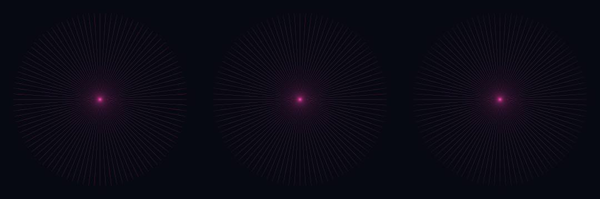
P3 vignette — Phase variations
Annular falloff frame with compact feather band. Phase varies while scale stays fixed. Combined as a 1x3 grid of three variations.
-
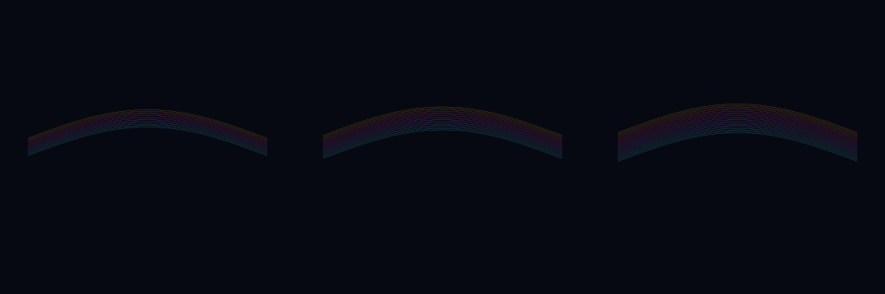
P3 multicolor line — Symmetry variations
Close bowed iris transition with smoothstep ramp. Symmetry varies while density stays fixed. Combined as a 1x3 grid of three variations.
-
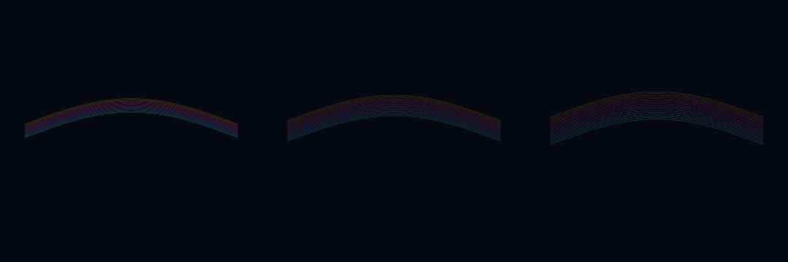
P3 multicolor line — Density variations
Close bowed iris transition with smoothstep ramp. Density varies while symmetry stays fixed. Combined as a 1x3 grid of three variations.
-
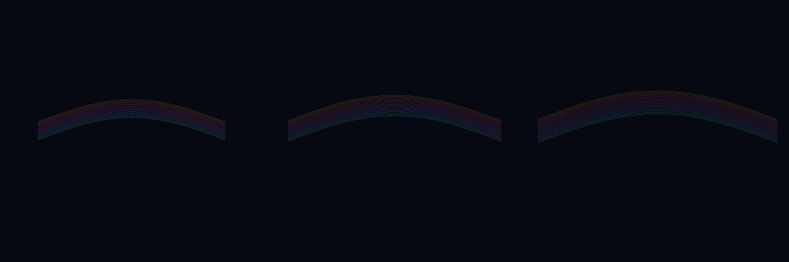
P3 multicolor line — Scale variations
Close bowed iris transition with smoothstep ramp. Scale varies while phase stays fixed. Combined as a 1x3 grid of three variations.
-
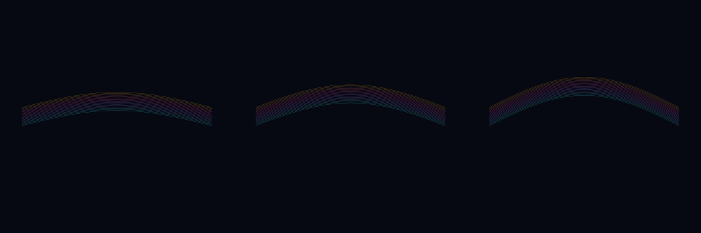
P3 multicolor line — Phase variations
Close bowed iris transition with smoothstep ramp. Phase varies while scale stays fixed. Combined as a 1x3 grid of three variations.
-
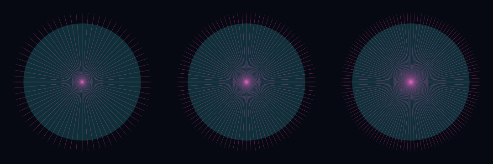
P3 flinque — Symmetry variations
Translucent tint kept inside the ray perimeter. Symmetry varies while density stays fixed. Combined as a 1x3 grid of three variations.
-
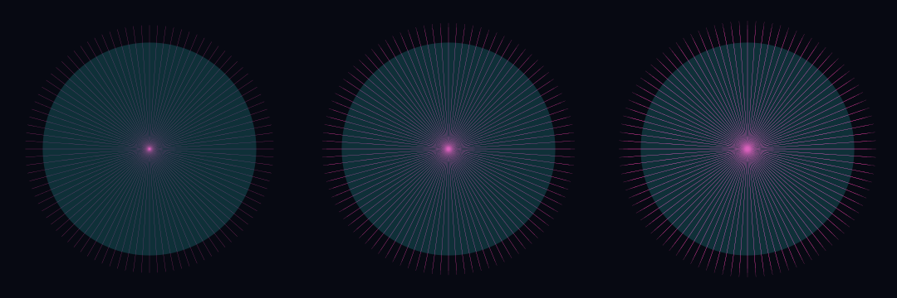
P3 flinque — Density variations
Translucent tint kept inside the ray perimeter. Density varies while symmetry stays fixed. Combined as a 1x3 grid of three variations.
-
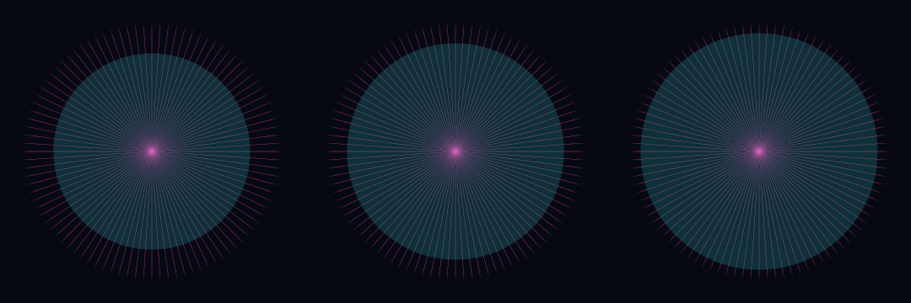
P3 flinque — Scale variations
Translucent tint kept inside the ray perimeter. Scale varies while phase stays fixed. Combined as a 1x3 grid of three variations.
-
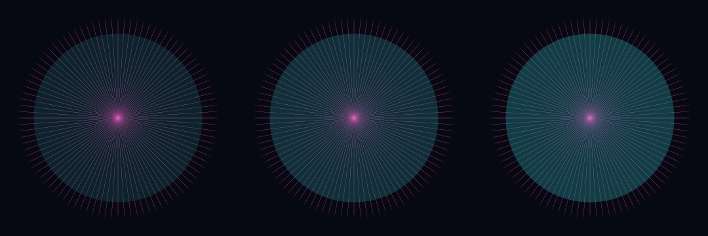
P3 flinque — Phase variations
Translucent tint kept inside the ray perimeter. Phase varies while scale stays fixed. Combined as a 1x3 grid of three variations.
-
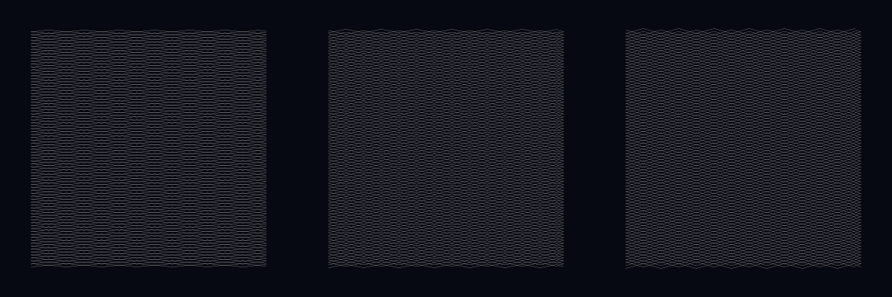
P5 latent image — Symmetry variations
Direction-modulated parallel microline band. Symmetry varies while density stays fixed. Combined as a 1x3 grid of three variations.
-
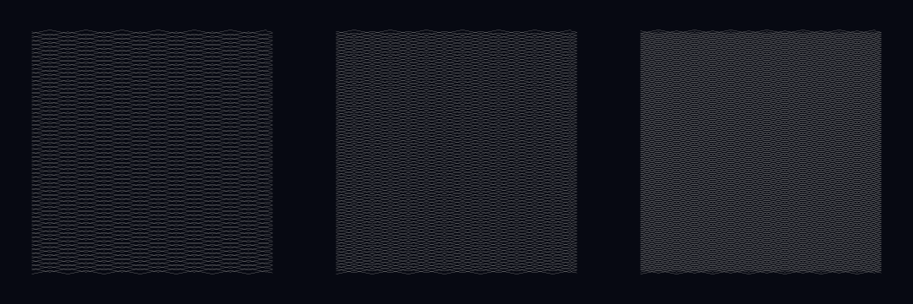
P5 latent image — Density variations
Direction-modulated parallel microline band. Density varies while symmetry stays fixed. Combined as a 1x3 grid of three variations.
-
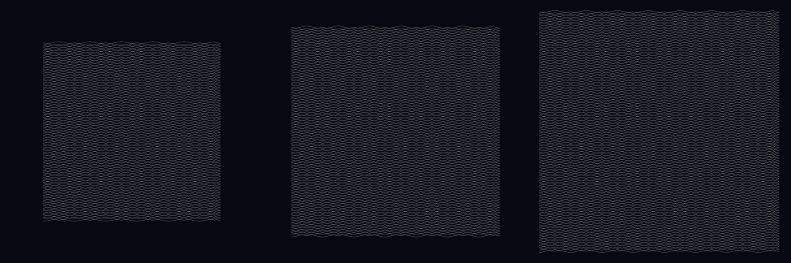
P5 latent image — Scale variations
Direction-modulated parallel microline band. Scale varies while phase stays fixed. Combined as a 1x3 grid of three variations.
-
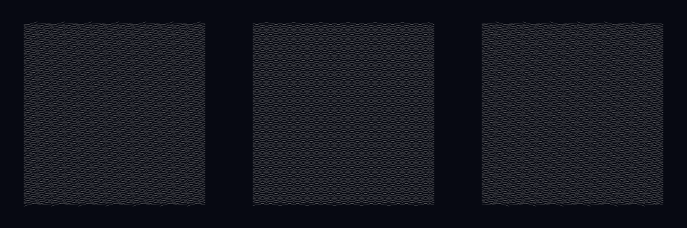
P5 latent image — Phase variations
Direction-modulated parallel microline band. Phase varies while scale stays fixed. Combined as a 1x3 grid of three variations.